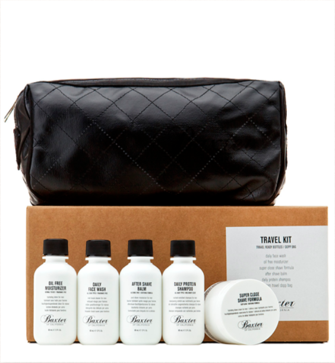
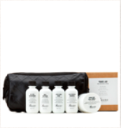
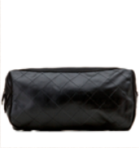

Набор для путешествий «Baxter of California»
- Главная
- Магазин
- Средства для ухода
- Набор для путешествий «Baxter of California»



есть в наличии
Артикул: dexter-ae
Travel Kit – необходимый аксессуар во время любого
путешествия. В
аккуратной кожаной сумке находится все, что
нужно для бритья и
ухода за кожей во время рабочей поездки
или отдыха: средство для
умывания, увлажняющий крем, крем
для бритья, крем после бритья,
шампунь. Набор также может
стать отличным подарком.
В набор входят:
- Средство для умывания (50 мл)
- Увлажняющий крем (50 мл)
- Крем для бритья (50 мл)
- Крем после бритья, шампунь (50 мл)
- Удобная кожаная косметичка